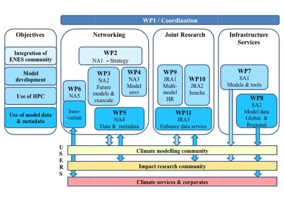

IS-ENES3 Phase 2: Project
Objectives
IS-ENES2 will:
Foster the integration of the European Climate and Earth system modeling community
- Strengthen ENES governance, further developing its strategy, especially with regards to model evaluation and model developments
- Stimulate interactions between global and regional climate modeling communities Develop training
Enhance the development of Earth System Models for the understanding of climate variability and change
- Network on future model developments required to improve model quality and use of future computing architectures
- Stimulate common software developments and providing a service on models and tools
Support high-end simulations enabling us to better understand and predict climate variations and change
- Prepare for future exascale computing architectures
- Prepare multi-model high resolution common experiments on the European PRACE high-performance computer facilities
- Stimulate collaboration with ICT companies
Facilitate the application of Earth system model simulations to better predict and understand climate change impacts on society
- Enhance the dissemination of model results from both global and regional model experiments
- Develop an interface dedicated to the climate impact community and improving the quality of information on simulations through metadata developments and guidance to users
- Enhance interaction between the climate modelling activity and users from companies and the emerging climate services
Partners
Description of Work
IS-ENES2 is structured into 11 workpackages, 5 Networking Activities (NA), 2 Service Activities (SA), 3 Joint Research Activities (JRA) and one workpackage dedicated to the project coordination & management.
Here is a schematic representation of IS-ENES2 objectives and organisation of work packages:

List of IS-ENES2 Work Packages:
WP1: Scientific and technical coordination of IS-ENES2 This work package will ensure an effective, smooth and high-quality implementation of the project, with respect to both general administrative and management practices that are expected for projects funded via the EC programmes, and with respect to financial management.
Networking activities:
-
NA1 (WP2): ENES strategy This work package aims at strengthening the integration of the ENES community.
-
NA2 (WP3): Towards next generation models This work package will stimulate interactions among the community to prepare future generations of climate models.
-
NA3 (WP4): Earth System Modelling Environments This work package wil complement NA2 by focusing on the model environment tools that are required to develop, run and exploit ESMs.
-
NA4 (WP5): Data Networking This work package wil focus on data and metadata networking.
-
NA5 (WP6): Innovating on climate modelling This work package will focus on innovation for climate modeling.
Service activities
-
SA1 (WP7): The European Network of geographically distributed services on Earth System models, component models and tools It expands from IS-ENES1 service covering a wider range of services of models, with a minimum service for all 7 CMIP5 models offering expert contact to answer specific questions on models.
-
SA2 (WP8): ENES Climate Data Services It is the service on data from the ENES Data Federation.
Joint research activities
-
JRA1 (WP9): Multi-model, multi-member high resolution Earth System Models It will prepare multi-model multi-member high-resolution simulations for PRACE machines.
-
JRA2 (WP10): Performance benchmarks for coupled climate models It will develop benchmarks for HPC and evaluate different coupling technologies.
-
JRA3 (WP11): Developing software infrastructure for data archive services It will further develop methodologies and tools for climate data archives and to serve climate impacts.